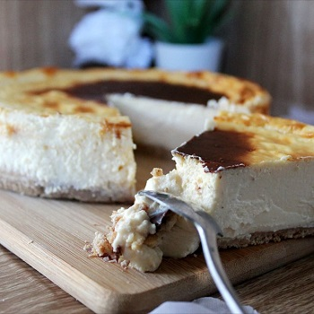
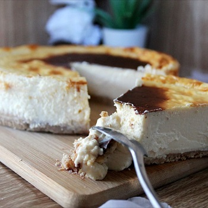

Emplatados
Aqui encontraras ejemplos de emplatados.
 

Receta
Aqui encontraras una buana receta.
La tarta de queso de Dulcespostres ha sido durante mucho tiempo la receta más popular del blog. Creo que su éxito se debe a que nonecesita horno para su elaboración y es una receta de queso muy fácil de hacer y que tiene unos ingredientes muy económicos.La habéis
elegido para ocasiones especiales como cumpleaños, acontecimientos familiares importantes y estas Navidades ha sido una de las mas
elaboradas por todos vosotros.